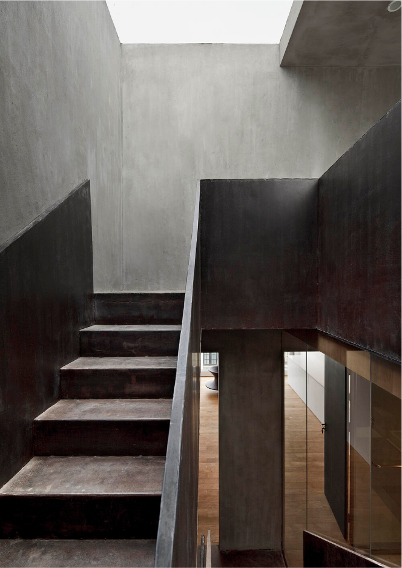
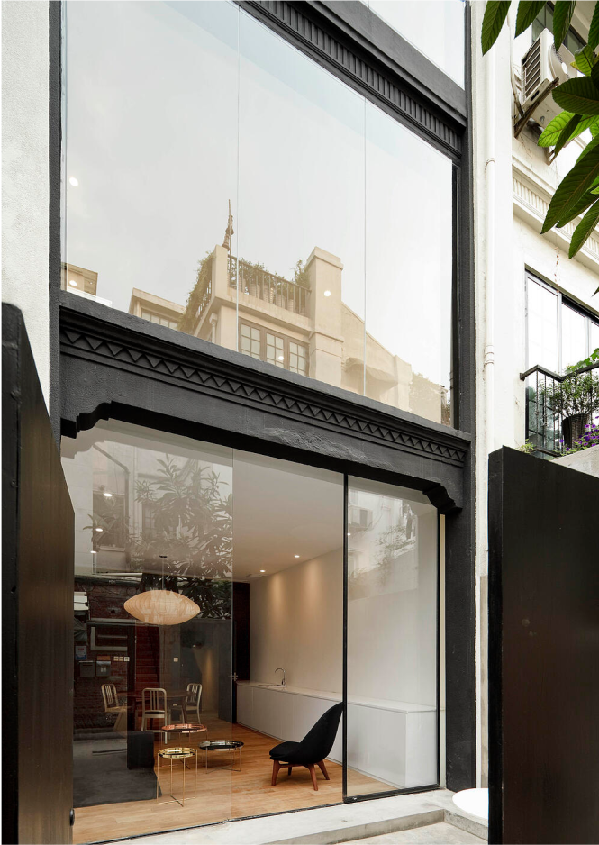
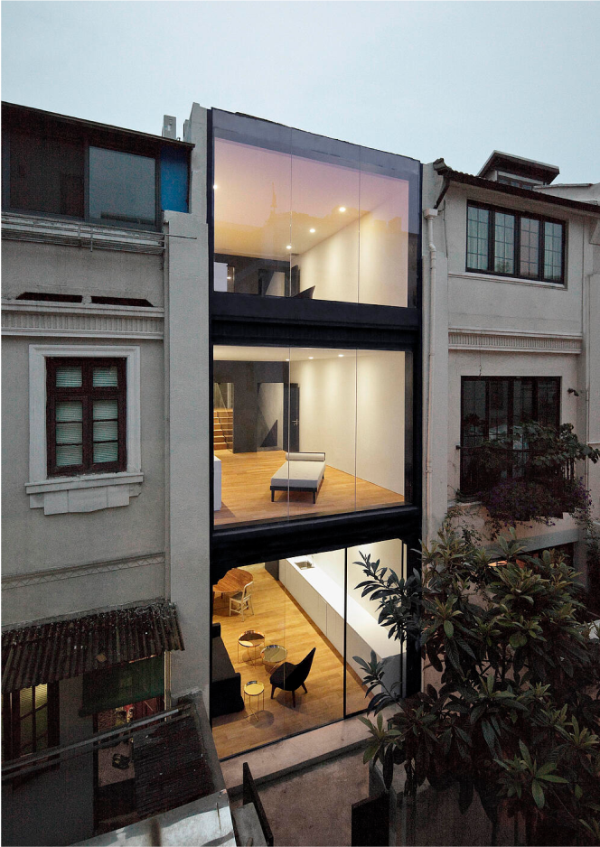

The magical lane houses, which were once the dominant fabric that
made urban Shanghai the intoxicating place that it was in the 1930s,
are now slowly being demolished, taken over by high-density
developments all over the city.

Neri&Hu was commissioned to reconstruct a dilapidated lane house
left with almost nothing except its glorious shell in the historic
and artistic Tianzifang area in Shanghai, and the mission was to
transform it into three separate apartment units.

Neri&Hu’s strategy was to rethink the typology of the lane house –
keeping the split level formation, a typical trait to lane houses in
this city, and add spatial interest through new insertions and
skylights to accentuate the architectural integrity of such a
typology.